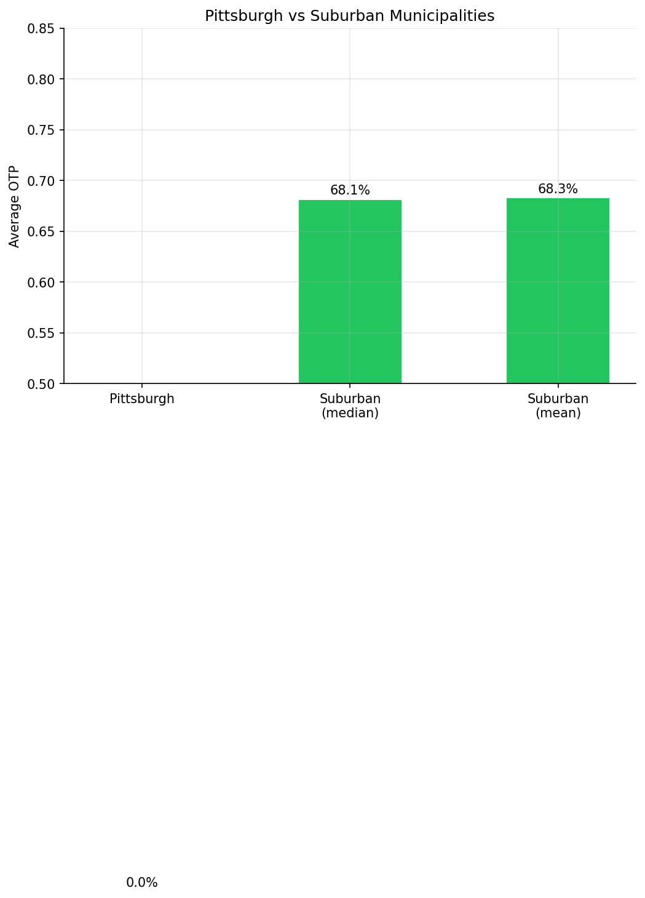
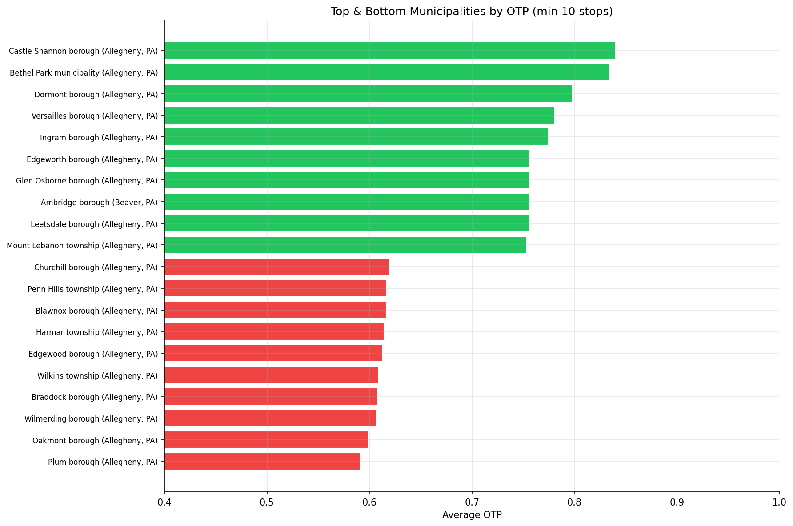

Analysis
15: Municipal/County Equity
Route and Service Drivers
Data Provenance
flowchart LR 15_municipal_equity["15: Municipal/County Equity"] t_otp_monthly["otp_monthly"] --> 15_municipal_equity 01_data_ingestion["Data Ingestion"] --> t_otp_monthly t_route_stops["route_stops"] --> 15_municipal_equity 01_data_ingestion["Data Ingestion"] --> t_route_stops t_routes["routes"] --> 15_municipal_equity 01_data_ingestion["Data Ingestion"] --> t_routes t_stops["stops"] --> 15_municipal_equity 01_data_ingestion["Data Ingestion"] --> t_stops d1_15_municipal_equity["polars (lib)"] --> 15_municipal_equity d2_15_municipal_equity["scipy (lib)"] --> 15_municipal_equity classDef page fill:#dbeafe,stroke:#1d4ed8,color:#1e3a8a,stroke-width:2px; classDef table fill:#ecfeff,stroke:#0e7490,color:#164e63; classDef dep fill:#fff7ed,stroke:#c2410c,color:#7c2d12,stroke-dasharray: 4 2; classDef file fill:#eef2ff,stroke:#6366f1,color:#3730a3; classDef api fill:#f0fdf4,stroke:#16a34a,color:#14532d; classDef pipeline fill:#f5f3ff,stroke:#7c3aed,color:#4c1d95; class 15_municipal_equity page; class t_otp_monthly,t_route_stops,t_routes,t_stops table; class d1_15_municipal_equity,d2_15_municipal_equity dep; class 01_data_ingestion pipeline;
Findings
Findings: Municipal/County Equity
Summary
81 municipalities had enough stops (10+) to analyze. There is a 25 pp spread between the best and worst municipalities, similar to the neighborhood-level equity gap. Cross-jurisdictional routes (serving 2+ municipalities) perform no differently from single-municipality routes.
Key Numbers
- 81 municipalities analyzed (with much better data coverage than the 89 neighborhoods in Analysis 04)
- Best: Castle Shannon borough (84.0%)
- Worst: Plum borough (59.1%)
- Spread: 24.9 pp
- Suburban median OTP: 68.1%
- Cross-jurisdictional routes (n=74): avg OTP = 69.5%
- Single-municipality routes (n=19): avg OTP = 69.2%
- Cross vs single t-test: p = 0.85 -- no significant difference
Observations
- The best-performing municipalities (Castle Shannon, Dormont, Beechview) are all served by the light rail T line, consistent with the mode advantage found in Analysis 02.
- The worst-performing municipalities (Plum, Penn Hills, Wilkinsburg) are served primarily by long local bus routes through the eastern corridor.
- The suburban median OTP (68.1%) is very close to the overall system average, suggesting no systematic suburban vs urban disadvantage.
- Cross-jurisdictional routes -- which might be expected to suffer from longer distances and more complexity -- perform identically to single-municipality routes. Route length and stop count matter more than jurisdictional boundaries.
- The municipal analysis has much better data coverage than the neighborhood analysis (Analysis 04), which lost 58% of stops due to missing
hooddata.
Implication
The equity gap is driven by mode and route structure, not by geography per se. Municipalities on rail or busway corridors get 80%+ OTP; those served only by long local bus routes get 60%. Municipal boundaries and suburban/urban distinctions are not meaningful predictors.
Caveats
- Route OTP is projected onto stops and then onto municipalities (ecological fallacy). A route's performance may vary along its length, and municipalities at the ends of long routes may experience different OTP than those near the middle.
- Trip weights (
trips_7d) are a static snapshot applied across the full study period. Service levels changed over time, especially during COVID.
Review History
- 2026-02-10: RED-TEAM-REPORTS/2026-02-10-analyses-12-18.md — 3 issues (2 significant, inherent to data). Ecological fallacy documented; Welch's t-test applied (no material change).
Output
per-municipality average OTP and stop count.

comparison chart.

bar chart of best/worst municipalities.
Methods
Methods: Municipal/County Equity
Question
Analysis 04 examined neighborhood equity but lost 58% of stops due to missing hood data. The muni (municipality) and county fields have broader coverage. Do suburban municipalities get better or worse service reliability than the City of Pittsburgh? Do routes that cross municipal boundaries perform differently?
Approach
- For each stop, assign OTP from the routes serving it (trip-weighted average from
route_stopsandotp_monthly). - Aggregate stop-level OTP by municipality and county, weighted by trips.
- Rank municipalities by average OTP.
- Identify cross-jurisdictional routes (routes with stops in 2+ municipalities) and compare their OTP to single-municipality routes.
- Compare Pittsburgh city vs suburban municipalities.
- Bar chart of top/bottom municipalities, and Pittsburgh vs suburban comparison.
Data
| Name | Description | Source |
|---|---|---|
stops |
Municipality (muni) and county for each stop |
prt.db table |
route_stops |
Links routes to stops with trip counts | prt.db table |
otp_monthly |
Monthly OTP per route | prt.db table |
routes |
Mode classification | prt.db table |
Output
output/municipal_otp.csv-- per-municipality average OTP and stop countoutput/top_bottom_municipalities.png-- bar chart of best/worst municipalitiesoutput/pittsburgh_vs_suburban.png-- comparison chart
Sources
| Name | Type | Description |
|---|---|---|
| otp_monthly | table | Monthly OTP values by route. Produced by Data Ingestion. |
| route_stops | table | Route-stop bridge with service frequency metrics. Produced by Data Ingestion. |
| routes | table | Route dimension table. Produced by Data Ingestion. |
| stops | table | Physical stop dimension table. Produced by Data Ingestion. |
| polars | dependency | Dataframe library used for fast tabular data transformations and aggregation. |
| scipy | dependency | Scientific computing library used for statistical tests and numerical routines. |